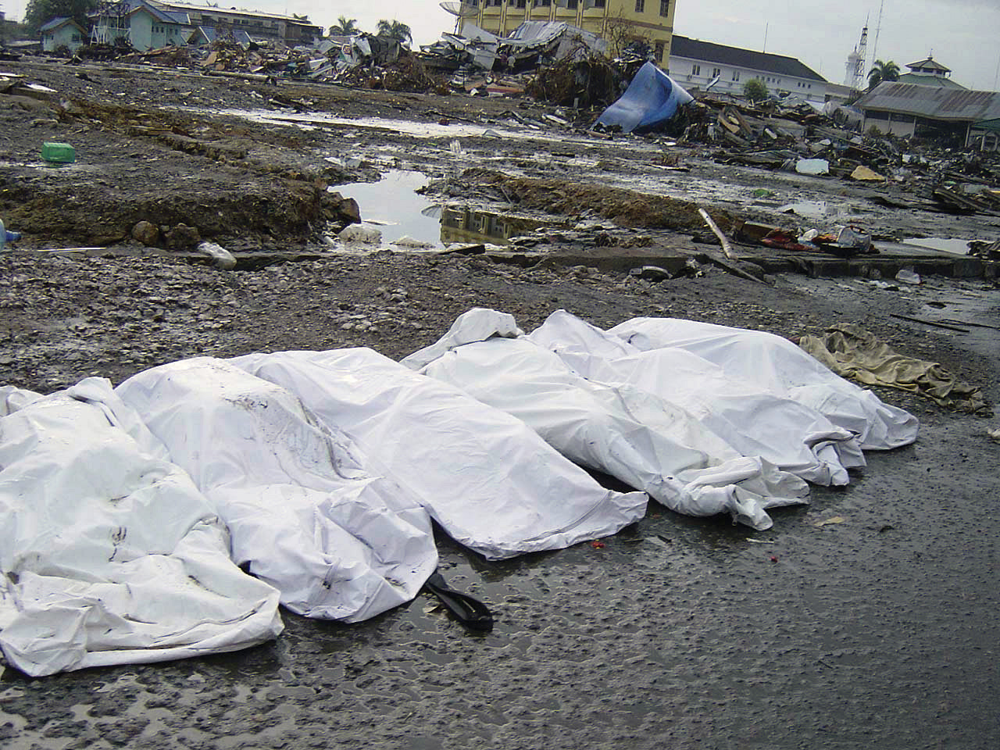
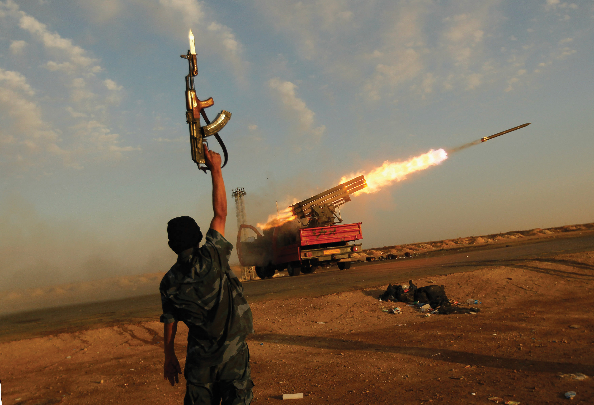

After reading this section, you should be able to answer the following questions:
This brings us to the present day. We start with the foreign and national security policies of the Obama administration.
President Barack Obama faced situations left by his predecessor—notably the wars in Afghanistan and Iraq, the Arab-Israeli conflict, and the global economic crisis. Obama also inherited persistent problems, such as the proliferation of nuclear weapons, their possession by North Korea, and their development by Iran. These issues were further complicated by unexpected challenges, as in the explosion of popular outrage against some of the autocratic rulers of the Middle Eastern states—states replete with corruption, unemployment, and inequality—of Bahrain, Egypt, Libya, Syria, Tunisia, and Yemen. (For a parody of how US policies differ toward each state, depending on US interests, see “John Oliver, America’s Freedom Package,” The Daily Show with Jon Stewart, March 21, 2011, http://www.thedailyshow.com/watch/mon-march-21-2011/america-s-freedom-packages.)
As with all his predecessors, the national interest was the essential criterion he would apply in deciding US foreign and national security policies. A state’s national interest does not necessarily change when a new president takes office. But what might that national interest be? How much flexibility would the president and his administration have (or display) to redefine it? To what extent would the Obama administration, especially the president and Secretary of State Hillary Rodham Clinton, continue, change, or even repudiate some of the Bush policies?
In May 2010, the White House released a white paper detailing the Obama administration’s National Security Strategy. It endorsed engagement, cooperation, and coordination with other states. It rejected the unilateralism, the go it alone policy, of the Bush administration. It committed to exhausting other options before war whenever possible. It identified the proliferation of weapons of mass destruction as the gravest danger facing the country.
So the Obama administration’s foreign and national security policies are not identical with his predecessor’s. They are less bellicose and unilateral, more diplomatic and multilateral. Examples are the pursuit of the nonproliferation of nuclear weapons, an arms control agreement with Russia resulting in a substantial reduction in the countries’ nuclear weapons, and reengagement with the United Nations. The president does not speak about “spreading democracy around the world” and has expressed a willingness to talk directly with Iran and other countries with which the United States has disagreements.
But in practice, the Obama administration’s changes have been more in tone and language, less so in substance.Peter Baker, “On Foreign Policy, Obama Shifts, but Only a Bit,” New York Times, April 17, 2009, A1ff. It has continued the war on terrorism against Al Qaeda and its allies (although without torture), expanding the use of drones against them in Pakistan’s tribal areas. (Arguably, these attacks are targeted assassinations). The administration has continued to give billions of dollars to Pakistan to combat terrorism despite questions about their effectiveness and effects.Lawrence Wright, “The Double Game,” New Yorker, May 16, 2011, 91–94.
President Obama did remove US combat brigades from Iraq by August 2010 and promised that all US troops would be out by the end of 2011; but personnel were likely to remain in the country after that time to help ensure its stability and favorable relations with the United States. He increased the number of US troops in Afghanistan by thirty thousand, doubling the overall American deployment (President Bush had begun a more modest buildup), but announced that the troops would start being withdrawn in July 2011. He sought to avoid getting the United States bogged down in a conflict quagmire as it had in Vietnam, thinking that he would otherwise lose a lot of support in his party.Bob Woodward, Obama’s Wars (New York: Simon & Schuster, 2010).
Nor did the Obama administration’s changes necessarily produce significant successes. Stalemates continued in the peace negotiations it brokered between Israel and the Palestinians and in relations with Iran and North Korea. Little progress was made on preventing, let alone reducing, the effects of climate change.
In March 2011, President Obama ventured into uncharted territory by intervening militarily in Libya. His announced purpose was humanitarian: to prevent the dictator Muammar Gaddafi from massacring the Libyans rebelling against his regime. The intervention, taken over by the North Atlantic Treaty Organization (NATO), of which the United States is the most important power, involved missile strikes against Gaddafi’s forces, then the imposition of a no-fly zone.
Its ultimate intention, indicated by the bombing of Gaddafi’s compound and by the president’s later statements, was regime change—that is, to force Gaddafi to give up his rule. Given his superior firepower and the rebels’ disorganization and lack of weapons, it was not clear that Gaddafi would depart voluntarily without further pressure from the United States and its allies or what any successor regime might be.
Libya, Afghanistan, Iraq, 9/11, and the other cases we have discussed show the ability of the executive branch to impose its preferred frames on international crises. Four factors are involved.This discussion is based on Jon Western, Selling Intervention and War: The President, the Media, and the American Public (Baltimore: Johns Hopkins University Press, 2005), 224.
First, the executive branch has an enormous advantage in the early collection and analysis of information, especially when crisis erupts on short notice. Second, when they are united and their campaign is coordinated, the president and his senior advisors can dominate the rhetoric and speeches about the crisis. The alternatives are leaks and breakdowns in message cohesion. Third, the administration can manipulate intelligence reports favoring its views and discount ones that contradict or weaken them. Fourth, if the crisis is brief, opponents lack the time and opportunity to mobilize public opinion. But if the crisis lingers, they can obtain their own information and undermine the administration’s initial framing.
As explained in Chapter 1 "Communication in the Information Age", the news media usually index story frames to the range of viewpoints—the agreement and disagreement—among high-ranking US officials.W. Lance Bennett, Regina G. Lawrence, and Steven Livingston, “None Dare Call It Torture: Indexing and the Limits of Press Independence in the Abu Ghraib Scandal,” Journal of Communication 56 (2006): 467–85; for a different approach, see Robert M. Entman, Projections of Power: Framing News, Public Opinion, and U.S. Foreign Policy (Chicago: University of Chicago Press, 2004). As time goes on, however, they may collect and disseminate information critical of the administration’s frame and expose any disconnect between official claims and the reality on the ground. This assumes they have access to the events, resources to cover, and the expertise to understand them.
US foreign and national security policies are made and largely articulated in the United States. Policymakers and members of the media interact in Washington and in related places such as the United Nations in New York City.
But the effects of US foreign and national security policies take place and so must be reported from abroad. Aside from the New York Times, most US newspapers, magazines, and television networks and stations have few foreign bureaus with correspondents. Some television news operations (e.g., ABC, CBS, NBC, and CNN) send reporters (known as “one-man bands”) equipped with computers and cameras to report from foreign locations, thereby gathering the news while avoiding the costs of bureaus. For foreign news, the bulk of US news media rely primarily on the wire services such as the Associated Press and, for visuals, on Associated Press Television News (APTN) and Reuters Television.
For US news organizations with reporters abroad, London is the central location: it is the source of around 25 percent of all bureau-based reporting. Bureaus, or half-bureaus with no permanently stationed correspondent, are established at other locations for several reasons: in Moscow, Beijing, and Tokyo because of their important relations with the United States; in jumping-off points such as Johannesburg, South Africa, for covering the rest of the region; and in Jerusalem to cover the continuing story of the Arab–Israeli conflict. Roughly a quarter of foreign correspondents are stringers or freelancers—more or less knowledgeable locals. Most of them receive low pay, no benefits, and have a precarious relationship with their employers.Stephen Hess, International News & Foreign Correspondents (Washington, DC: Brookings Institution Press, 1996).
Around 50 percent of television’s foreign coverage portrays violence.William A. Hachten and James F. Scotton, The World News Prism: Global Information in a Satellite Age, 7th ed. (Malden, MA: Blackwell, 2007), 9. Man-made and natural disasters—with their villains, victims, and heroes—are also news.Robert I. Rotbeg and Thomas G. Weiss, eds., From Massacres to Genocide (Washington, DC: Brookings Institution Press, 1996). These often occur where news bureaus are not located. For example, the main news in late December 2004 and on into 2005 concerned the horrifying death of at least 150,000 people and the destruction at the shorelines of several Asian countries caused by the tsunami waves that resulted from underwater earthquakes in the Indian Ocean.
Figure 17.5 Devastation Caused by the Tsunami of Late December 2004
Because the US news media do not have bureaus in most countries, they must dispatch reporters to cover disasters such as the tsunami waves that wreaked death and destruction on the countries bordering the Indian Ocean.
Source: Photo by Michael L. Bak, http://commons.wikimedia.org/wiki/File:Bodies_in_Banda_Aceh_after_2004_tsunami_DD-SD-06-07373.JPEG.
To cover stories from such “hot spots,” reporters often have to parachute (not literally) in from their bases. They spend time on logistics, getting from place to place, booking hotel rooms, and hiring drivers and translators.Ulf Hannerz, Foreign News: Exploring the World of Foreign Correspondents (Chicago: University of Chicago Press, 2004), 44. Because they lack knowledge of local conditions and don’t stay long, they tend to rely on a few sources, mainly the US embassy, aid workers, and spokespersons from the government of the country.
Wars and conflicts involving the United States (e.g., the Iraq War) are the exception: they are covered extensively by journalists assigned there. But even in Iraq, most reporters for the US news media had little knowledge of the region’s history, Islamic fundamentalism, the resurgence of Arab nationalism, or, indeed, of Iraq. Nor did they speak or read Arabic, which limited their ability to obtain information from native sources.
Accurate and comprehensive or not, news from overseas can be transmitted instantly to twenty-four-hour cable channels and thus to American policymakers and the public. This is facilitated by the combination of new communications technologies and global media systems. Satellite telephones, digital cameras, videophones, laptops with uplink capacities, computers, and blogs from people on the scenes provided vivid images and descriptions of events as instant news for the media to transmit and for people to access on the Internet.
The Defense Department interacts with the media to produce highly positive depictions in two ways. One is through the Hollywood films that “depict and glorify the heroic exploits of US military power.”Carl Boggs and Tom Pollard, The Hollywood War Machine: U.S. Militarism and Popular Culture (Boulder, CO: Paradigm Publishers, 2007), ix.
The second way the Pentagon generates positive coverage of an administration’s national security policies is through the special briefings it provides to the retired officers who appear thousands of times on television and radio as “military analysts.”This paragraph is based on David Barstow, “Message Machine: Behind TV Analysts, Pentagon’ Hidden Hand,” New York Times, April 28, 2008, A1ff. Many of them have ideological agreements with and allegiance to the Pentagon. They also have financial ties, as lobbyists for, senior executive or board members of, or consultant to military contractors who benefit from the policies the “analysts” assess. It is in their interests to maintain their access to and stay on the Pentagon’s right side. Consequently, many of them repeat administration talking points on the air. The largest group was affiliated with Fox News, then NBC and CNN. The Pentagon paid a private contractor to search databases and track all the analysts’ comments.
Positive portrayals of the military by the media may be unusual. The view of Civil War Union General William Tecumseh Sherman may be more typical: upon hearing that the Confederate army had shot two reporters, he remarked, “Great. Now we’ll have the news from Hell by noon.”
This suggests the perennial conflict between the military and the media. From the military perspective, reporters should be “part of the team.” For most correspondents, their coverage can only be restrained if it would jeopardize an operation or the lives of troops. Traditionally, however, the military has denies them access, limits their reporting to official sources, engages in obfuscation and delay, and censors their stories.
So it may seem surprising that the military allowed some six hundred reporters to be embeddedThe Defense Department’s innovation of placing reporters with military units during the Iraq War. with the US troops during the war in Iraq. Secretary of Defense Donald Rumsfeld and Assistant Defense Secretary for Public Affairs Victoria Clarke pushed the decision through. It turned out to be very shrewd. Reporters were co-opted by the troops with whom they were embedded. They reported from the perspective of the US forces winning the war. And they were kept away from places the Pentagon did not want them to be.
Reporters who were not embedded had a tough time getting into and around Iraq and obtaining cooperation from the US military. Many of them were located at US Central Command forward headquarters in Doha, Qatar, where at press conferences generals summarized the success of military operations on a high-tech set designed by a show-business professional at an estimated cost of $250,000.
Reporting from war zones abroad is dangerous. Journalists live and work under constant threat of kidnapping and murder. Many have been killed, many more wounded. As one horrifying example, in April 2011, photojournalists Tim Hetherington (see Diary and Restrepo in Section 17.7 "Recommended Viewing") and Chris Hondros were killed by a grenade in Libya.
Figure 17.6
The dangers of reporting conflicts in the death of photojournalist Chris Hondros, who was killed by a grenade in Libya not long after taking this photo of a rebel fighter in Misurata.
Photo by Chris Hondros of a Rebel Fighter in Misurata, Libya, from Front Page of the New York Times April 21, 2011, Getty Images.
American policymakers wage the battle for public opinion abroad with public diplomacyUS policymakers’ efforts to gain the approval and support of policymakers in foreign countries. aimed at policymakers and the public in foreign countries. Over the years, a bevy of organizations has existed. They include the International Broadcasting Bureau, the Voice of America (VOA), Worldnet television service, Radio and TV Marti, Radio Free Europe/Radio Liberty, and Radio Free Asia.
During and after the Iraq War, the State Department’s Office of Public Diplomacy and Public Affairs promoted what it called “Brand America” to the Islamic world, especially to young people who have reservations about US policy but also admire elements of American life and culture.
These efforts were unsuccessful. Voice of America broadcast Radio Sawa (Radio Together), which offered rock and pop and some news framed from the US perspective. People listened to the music but turned to regional media for the news. The US-sponsored Al Hurra (the Free One), a satellite television station that broadcast a mix of news and pop culture. It was derided in the Arab press as “Fox News in Arabic.” The public diplomacy campaign also featured testimonial advertisements from Muslims living in America describing it as a tolerant, multicultural society with religious freedom. But most major Arab networks refused or demanded too high a price to air them. Finally, American spokespersons and high-ranking officials such as Secretary of State Colin Powell and National Security Advisor Condoleezza Rice gave interviews to Arab media. But the channel showing Rice’s interview on October 2001 preceded it by repeatedly playing pro-Israel statements she had made so that she was discredited even before the interview was aired.
A wealth of information about international affairs is available on the Internet from domestic and foreign media: television clips, radio interviews, and reports and stories in newspapers and magazines. People interested can obtain information about policymakers from around the world and the contents and effects of their foreign and national security policies.
Camcorders, cell phones, and satellite phones are used to gather and report the news. The first video and photos of the tsunami and its dire destruction of late 2004 came from the camcorders of tourists caught in the deluge. The destruction and horror of terrorists’ attacks on the London subway on July 7, 2005 (known commonly as 7/7), was reported first by people trapped underground.William A. Hachten and James F. Scotton, The World News Prism: Global Information in a Satellite Age, 7th ed. (Malden, MA: Blackwell, 2007), 47.
As we discussed in Chapter 1 "Communication in the Information Age", WikiLeaks was founded by Julian Assange to achieve transparency in government activities by exposing official secrets. In 2010, it released to selected news organizations about 90,000 documents prepared by the US military about the wars in Iraq and Afghanistan; then later in the year, WikiLeaks released a trove of around 260,000 US diplomatic cables. The cables show that candor exists behind closed doors: they reveal confidential conversations, accounts of meetings, and appraisals of foreign leaders.
The New York Times, which received the reports directly from WikiLeaks and the cables from the United Kingdom’s Guardian newspaper, published articles detailing and interpreting the leaked documents.For example, Scott Shane and Andrew W. Lehren, “Leaked Cables Offer a Raw Look Inside U.S. Diplomacy: Dispatches Chronicle Threats and Tensions,” New York Times, November 29, 2010, A1ff. It also put selected items online, as did WikiLeaks, with redactions to remove the names of the diplomats’ confidential sources.
Some of the material consists of low-level gossip. But there are revelations, such as the following:
There have been repercussions. The US ambassador to Mexico resigned as a result of information released. Ecuador expelled the US ambassador, who in a cable had referred to high-level police corruption that the country’s president possibly knew about. The US government identified security gaps and further limited the availability of classified information. Pfc. Bradley Manning, the army intelligence analyst who had downloaded the documents from a military computer system and given them to WikiLeaks, was incarcerated in solitary confinement for several months before trial. Meanwhile, it was revealed that WikiLeaks had fragile finances and management problems and its founder had legal difficulties.
Osama bin Laden’s associates in their compound watched Hollywood movies, including The Siege (see Section 17.7 "Recommended Viewing") as they devised and refined the plot that would result in 9/11.Lawrence Wright, The Looming Tower: Al-Qaeda and the Road to 9/11 (New York: Knopf, 2006). But their use of new technology is far more advanced than that. They use it to collect information about targets such as ports, airports, and nuclear power plants and to communicate about, plan, and coordinate attacks. They circulated a manual prepared by Al Qaeda, nicknamed “The Encyclopedia of Jihad,” that detailed how to establish an underground organization and engage in attacks.
There are more than four thousand terrorist websites in different languages. They change their addresses to avoid being hacked by intelligence agencies and freelance vigilantes but still retain much of their content. These sites free the terrorists from dependence on the media for coverage and framing of their deeds. They are aimed at current and potential supporters, governments they oppose, and worldwide public opinion. They are used to raise funds, recruit terrorists, and mobilize support; they are also used to express the terrorists’ views and objectives, threaten their enemies, and show videos of their actions.
Through their video unit, the terrorists send video messages to receptive broadcasters like Al Jazeera, messages that are reported and rebroadcast by media outlets throughout the world. These videos are carefully staged: the backdrop is designed, weapons pointed, and the shot framed. When kidnapped victims are shown, their statements are scripted as they plead for their lives before sometimes being decapitated on camera. Western media do not show the horror, but the videos are sold in Iraq and throughout the world.
The media can undermine US foreign and national security policies. By depicting the Tet Offensive as successful, the media made it difficult for President Johnson to send more troops to Vietnam and encouraged the eventual withdrawal of US forces. The nightly stories about US embassy personnel captive in Iran, often under the heading “America Held Hostage,” probably provoked President Carter into allowing a risky rescue effort that turned into a debacle.
Media depictions of events abroad can encourage or compel US policymakers to take action by sending aid personnel, even troops. This is called the CNN EffectMedia depictions of events abroad that encourage or compel US policymakers to intervene by sending aid or even troops..Eytan Gilboa, “The CNN Effect: The Search for a Communication Theory of International Relations,” Political Communication 22, no. 1 (January–March 2005). It occurs under two conditions. The first condition is when policymakers have not decided or are uncertain about what to do or their policy preferences are contested by other policymakers. The second condition is when the media’s news frames and commentary are critical of the government’s actions or inaction, and the coverage empathizes with the victims. Thus policy uncertainty combined with negative news (e.g., coverage of slaughter and starvation) increase the likelihood of US intervention in humanitarian crises abroad.Piers Robinson, The CNN Effect: The Myth of News, Foreign Policy and Intervention (New York: Routledge, 2002).
Media coverage, however, often comes after—not before—the government’s decision to take action. Thus news coverage of the humanitarian crises in Somalia was a response to the first President Bush’s decision to deploy ground troops. Then news stories supported the decision by framing the famine there as a desperate crisis in which the United States had an obligation to intervene. Later news coverage, however, did affect policy. Reports of the killing of eighteen US Army Rangers and the showing of the body of one of them being dragged through the country’s capital of Mogadishu, resulted in the Clinton administration’s decision to withdraw US troops.
Media coverage or lack of coverage of an event can allow and even encourage government inaction. In Rwanda in 1994, Hutu extremists slaughtered eight hundred thousand Tutsis and Hutu moderates, their countrymen, women, and children. The news media depicted this genocide, when they covered it at all, as part of an endless tribal struggle the United States could not much affect. Besides, it was only a few months since the media had reported the killing of American soldiers in Somalia. The United States never intervened in Rwanda. As National Security Advisor Anthony Lake said later, “We didn’t make any decision.” He did not ask his staff to consider options and make a policy recommendation to President Clinton.John Darnton, “Revisiting Rwanda’s Horrors with a Former National Security Advisor,” New York Times, December 20, 2004, E1.
But generally, by what they cover and how they frame it, the US media support the president’s foreign and national security policies and priorities.Jonathan Mermin, Debating War and Peace: Media Coverage of U.S. Intervention in the Post-Vietnam Era (Princeton, NJ: Princeton University Press, 1999). Their coverage of the terrorist attacks of 9/11 helped justify the war on terrorism against Osama bin Laden and Al Qaeda and the attack on the Taliban in Afghanistan. By depicting war against Iraq as desirable, the media facilitated the Bush administration’s policies of preemption and regime change. When military operations began on March 19, 2003, nearly two-thirds of Americans polled favored the president’s policies toward Iraq and 71 percent supported the use of force.Richard Morin and Claudia Deane, “71% of Americans Support War, Poll Shows,” Washington Post, March 9, 2003, A14.
The Obama administration inherited foreign and national security policy issues such as the wars in Afghanistan and Iraq. Accordingly, it must engage with these preexisting challenges as well as newly emerging threats. While the Obama administration has attempted to distance itself from the policies of the Bush administration, the actual differences are smaller than reflected in presidential rhetoric and speeches. The president’s policymaking ability is buttressed by advantages in information gathering, public appeal, manipulation of intelligence, and the opposition’s struggle to mobilize public opinion. While the media usually support the administration’s policies, at least at first, they can also provide important criticism and have influenced decisions.